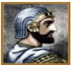
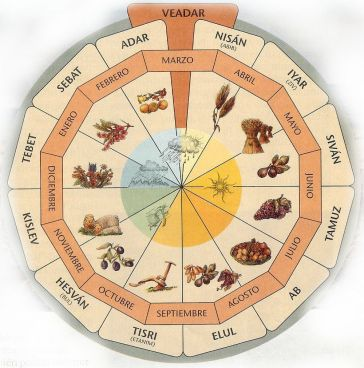

EDAD MESOPOTÁMICA
¿Dónde se encuentra ubicado?
Mesopotamia que en griego significa "entre ríos", nombre que le da Heródoto debido a que se encontraron entre los ríos Éufrates y Tigris. Y se encuentra ubicado al suroeste de Asia Central, abarcando el actual país de Irak y parte de Siria con los siguientes límites:
- Norte: montaña Armenia y Turo
- Sur: Golfo Pérsico
- Este: Monte Zagros
- Oeste: Desierto de Siria
Introducción
La abundancia de agua creó una gran riqueza natural, hasta el
punto de que, según la Biblia, estuvo allí localizado el Paraíso.
El neolítico pronto alcanzó un gran desarrollo en Mesopotamia, con
asentamientos urbanos importantes como Eridu o Uruk (desde el año
3.750 a. c.). Esta ciudad comenzó, muy probablemente, un sistema
complejo de escritura.
La historia de Mesopotamia es una sucesión de civilizaciones,
iniciada por los sumerios (3.000 a.c. - 2.350 a.c.). Estos son
vencidos por las huestes de Sargón, rey de los acadios (Akkad),
que imponen su poder hasta 1.800 a.c. Desde ese momento conviven
dos importantes culturas: los asirios (Assur), al norte, y los
babilonios (Babilonia), al sur. Cada uno evoluciona de forma
diferente, pero ambos acabarán dominados por pueblos guerreros
llegados del este, los persas (Persia), medos y aqueménidas.
Pueblos que habitaron
-
SUMERIOS (4.000-2.000 a.c):
Durante el cuarto milenio a.C., el sur de Mesopotamia fue invadido y poblado por los sumerios, provenientes probablemente de la India o de Asia central.
Se considera la más antigua civilización del mundo. Se organizaron en Ciudades Estados. Se destacaron por la construcción de canales, pozos y templos.
El comercio "motor de la historia", inicia el trueque.
Inventaron la escritura, la rueda, las leyes, los ladrillos, primeras formas de cálculos, etc.
Son conquistados por el rey Sargón I, líder del pueblo Acadio. -
ACADIOS (2.370-2.150 a.c.):
Sargón fue el fundador del primer imperio de la historia, unifico la Antigua Mesopotamia con capital en Akkat. Época de gran actividad política y comercial con otros pueblos.
Fue el pueblo semita que adquirió mayor relevancia. En 2.220 a.C, El Imperio Acadio cae frente a las tribus nómadas de los Gutis y Amorreos.
Se rompe la unificación durante siglos, la cultura renació con la dinastía III de Ur. El rey de Gudea tomó la ciudad de Lagash en Sumelia y la reconstruye y embellece. -
BABILÓNICO (2.000-1.530):
El primer Imperio fue gobernado por el rey Hamurabi, creador del código de leyes.
Unifica a Mesopotamia, se autoproclamó como rey de Sumer y Acad.
Babilonia se convierte en el principal centro económico, político y cultural del medio oriente, se convirtió en la Perla de Mesopotamia. -
ASIRIOS (1.800-600 a.c.):
Gobernado por Assurbanipal II. Construyeron una gran maquinaria de guerra.
Mejoraron el carro de combate, organizaron los ejércitos en infanterías y caballerías, dominaron las armas de hierro.
El imperio asirio, se basaba en el terror y la violencia y cobrador de altos tributos. En el año 612 a.C. cayó la capital, Nínive.
-
NEOBABILÓNICO (618-539):
Resurgió con la tribu semita de los caldeos, cuando fue refundada por Nabopolasar, libero a Babilonia de la dependencia de los Asirios y conquisto Judá y Jerusalén.
Nabucodonosor II reconstruyó y embelleció la ciudad de Babilonia, dotándola de gran magnificencia.
Fueron definitivamente aniquilados por los hititas, Mursilis I y cayó bajo el poder nómadas de los casitas. -
IMPERIO PERSA (539-330 a.c.):
Después de la muerte de Nabucodonosor II, Babilonia fue invadida el rey persa Ciro II, funda la dinastía Aqueménide y fundó una metrópoli en Persépolis.
En el siglo V a.C, se consolidan extensos territorios por Darío I, que inició una larga lucha entre griegos y persas, "guerras médicas”, de la cual salieron victoriosas las ciudades griegas.
En el siglo V a.C. Babilonia fue conquistada por Alejandro Magno, rey de Macedonia, que instaló en ella su corte, transtormándola en un foco cultural en el que confluyeron la cultura griega y oriental.Ciro II el Grande
Darío I
Alejandro Magno
Organización política y social
El rey o emperador era la autoridad máxima. Su poder era absoluto,
hereditario y de carácter divino; pero no era considerado un dios
como entre los egipcios, sino un intermediario entre los dioses y
sus súbditos. Por lo tanto, era el primer sacerdote y quien
administraba el Estado y dirigía el ejército. En las decisiones
importantes era asesorado por un grupo cercano de sacerdotes.
No existía la propiedad privada, ya que los terrenos adyacentes a
la ciudad pertenecían al dios.
Respecto a las diferencias sociales, estaban los hombres libres,
entre los que se contaban la nobleza, los sacerdotes, los
funcionarios reales, los pequeños propietarios y los comerciantes;
los meshkin u hombres insignificantes, ex esclavos que habían
comprado su libertad; y los que no eran nada, esclavos y
prisioneros de guerra.
Organización económica
Construcción
Agricultura y ganadería
Artesanía
Escuelas
Metalurgia
Textiles
La agricultura de regadío en el sur de Mesopotamia posibilitó la
recolección de varias cosechas al año, y con ello, un excedente de
cebada y otros cereales. El Estado intercambiaba dichos excedentes,
dando origen a un intenso comercio con los pueblos vecinos.
Gran cantidad de caravanas venían de diferentes lugares para
intercambiar los productos agrícolas o artesanales que ellos
producían. Como consecuencia de esta relación económica, sus
conocimientos artísticos, técnicos e ideológicos se fueron
difundiendo a diferentes lugares de la región.
Religión
Fueron politeistas y sus dioses eran antropozoomorfos. Formaban triadas, la principal fue: Anu, Ea, Enlil.
Educación
Hasta los diez años (edad adulta) niños y niñas eran educados por sus madres, después era el padre quien se ocupaba de su educación, aunque las niñas eran controladas de cerca por las madres. La diferencia en la educación se basaba sobre todo en los distintos sexos. Las niñas podían dedicarse a la religión ingresando en un templo, pero lo más normal era que fuesen preparadas para el matrimonio. Cuando seguían la vía religiosa su máxima aspiración era llegar a ser sacerdotisa de Marduk, dios patrón de Babilonia.

Por otro lado, la educación de los hombres era mucho más dura, recibiendo severos castigos si desobedecían a su padre o tutor de un oficio. Aunque los niños también se podían dedicar al campo religioso no era lo común. A las escuelas bit tuppi “casa de la tablilla” al principio podían asistir hombres y mujeres pero más tarde se quedaron sólo para hombres, aunque no todos podían acceder a sus aulas, sólo se lo podían permitir las familias ricas. Esta es una de las causas por lo que la educación de las mujeres es menos conocida. En ellas se enseñaba escritura cuneiforme, comenzando por los ciclos de la tierra, algo básico para una cultura agrícola.
Arquitectura
- Construían con adobe y ladrillo.
- Usaban arcos y bóvedas.
- Destacan los palacios y los "ZIGURATS".
- Ejemplo el Zigurat de Ur
Destacaron por sus construcciones de gran tamaño, en las que
utilizaron el ladrillo (invento sumerio). Asimismo, aplicaron
conocimientos matemáticos en sus edificaciones.
Desarrollaron tres formas de arquitectura: religiosa, civil y
funeraria.
-
Arquitectura Religiosa
Se construyeron los zigurats, que fueron pirámides escalonadas de tres a más niveles. Cumplían una función ceremonial y astronómica. Destacan los Zigurats de Ur, Uruk y Babilonia.
El Templo Blanco de Uruk, fue el antecedente de los Zigurats -
Arquitectura Civil

Construyeron ciudades amuralladas.
Destacan los palacios como el Korshabad en Asiria. Jardines colgantes de Babilonia, considerada una de las siete maravillas del mundo antiguo.
Escritura
Al principio la escritura reproducía un objeto (pictograma), después una acción o un concepto (ideográfica), y por último un sonido. De todos modos requería un largo. aprendizaje para conocer la complejidad de sus signos. Esta imagen muestra cómo evolucionó este tipo de escritura
La escritura nació en los templos por eso casi todas las escuelas estaban cerca de ellos. La más antigua que se conoce data del 2.000 a.C., situada en la ciudad de Mari. Con el paso de los años serán los sacerdotes quienes dominen la educación de los jóvenes ricos, los que estudiaban normalmente para escriba o sacerdote. Algo más inusual era que se colocasen como funcionarios del estado, o incluso podían aprender un oficio.
Se construyeron bibliotecas regidas por sacerdotes, donde se reunían los estudiantes. En los templos se estudiaba escritura, literatura, aritmética, música, culto, geometría, arte, astronomía y medicina, entre otras, aunque ésta última era muy valorada. Finalmente se enseñaban conceptos mágicos y divinos para que los jóvenes pudieran interpretar la voluntad de los dioses.
Pintura
La pintura se desarrolla estrictamente de manera decorativa utilizándose como complemento para el embellecimiento de la arquitectura
Escultura
Destacan los toros alados de Korshabad (Asiria), el grupo Escultórico de Tell-Asmar (Sumeria), la Estela la de los Buitres o Estela
Ciencias
-
Matemática
Nociones de Aritmética y Geometría, como el sistema sexagesimal (60) y duodecimal (12): principio de círculo, circunferencia, arco y radio; noción de base, altura y ángulo.
-
Astronomia
Iniciaron las observaciones astronómicas reconociendo cinco planteas: Mercurio, Venus, Tierra, Marte, Júpiter. Calendario lunar (360 días, divididos en 12 meses de 30 días cada uno, 24 horas, 60 minutos, 60 segundos) Crearon el horóscopo o zodiaco
-
La Rueda
Las primeras ruedas no se crearon para el transporte sino para accionar sistemas (como el de irrigación). La existencia de este objeto dio origen a otras invenciones, como el carruaje. Además esta consiste en una pieza mecánica de forma circular que gira sobre un eje. Es muy simple, pero tremendamente útil. Prueba de ello son los coches que nos permiten desplazarnos kilómetros de distancia. Pues bien, todo esto lo podemos hacer gracias a los habitantes de Mesopotamia, quienes la inventaron hacia el 2500 a. C
-
El Ladrillo
El ladrillo es uno de los materiales más fundamentales en la construcción de las antiguas civilizaciones Mesopotámica y Palestina, y aún en la actualidad. Anteriormente solo se disponía de madera y piedra sin embargo los habitantes de Jericó en Palestina fabricaban ladrillos hace unos 9.000 años. Los constructores sumerios y babilónicos levantaron zigurats, palacios y ciudades amuralladas con ladrillos secados al sol, que recubrían con otros ladrillos cocidos en hornos. mas resistentes y a menudo con esmaltes brillantes formando frisos decorativos.
-
El Arado
En Mesopotamia se creó el arado, a mediados del IV milenio a. C , permitiendo así que la agricultura pudiese desarrollarse rápidamente, primero en Oriente Próximo, y después por el resto del mundo. Este fue un gran avance. teniendo en cuenta que desde el descubrimiento de la agricultura en la llamada Fértil Medialuna, se venían empleando para el cultivo de la tierra unas madera en forma de gancho, con puntas endurecidas por el fuego. Con la invención del arado y con el complemento de la energía animal (hacia el 3.000 a. C) se pudieron cultivar mayores extensiones de tierra.

-
La Polea
La polea es una herramienta de ingeniosa creación para traccionar o elevar pesos. Esta consiste en una roldana (rueda con una canaleta en su circunferencia) cuyo centro está fijo y sobre la canaleta pasa una correa, cadena o soga en cuyos extremos se aplican potencias y resistencias.
-
El bote y la vela
A pesar de la existencia de los carruajes, el transporte terrestre era lento e ineficiente en muchas ocasiones. Si el trayecto era muy largo, se corría el riesgo de que las bestias murieran por el cansancio, generando pérdidas materiales. Fue así que surgió el transporte acuático como una alternativa mucho más factible y conveniente. Los primeros botes tenían la forma de un cuadrado y constaban de una vela. La dirección no podía ser cambiada, por lo que se estaba a la merced del viento cuando se empleaban estas barcazas. Los primeros botes navegaron el Tigris y el Éufrates con el objeto de explorar ciertas áreas y pescar en las zonas en las que fuera posible. Posteriormente, el diseño fue perfeccionado.
-
Irrigación artificial
Los métodos de irrigación artificial se inventaron en Mesopotamia. Desde luego, con la adecuada irrigación de los suelos y su natural fertilidad lograron producir excelentes cultivos. Así mismo, se generaron cosechas muy abundantes y diversas. Se puede decir que cuando estos pueblos dejaron de ser nómadas y se convirtieron en sedentarios dieron origen a la agricultura. Porque los nómadas únicamente se dedicaban a la recolección de alimentos y no producían. Al convertirse en sedentarios se empezaron a dedicar la producción de sus satisfactores, sus actividades iniciales fueron la agricultura y la ganadería.
-
Calendario
En Mesopotamia se creó uno de los primeros -hay quien opina que fue el primero- calendario, hacia el año 4000 a. C. Los meses tenían cuatro semanas de siete días, quedando fuera de cuenta los últimos dos días de cada mes.
 -
Metalurgia
El cobre fue el primer metal que se consiguió fundir, fechándose este hito alrededor del 5000 a. C. Esto ocurrió en Mesopotamia, encontrándose restos de este mineral en ciudades como Uruk, Ur o Sumeria. Los primeros productos para los que se usó el cobre fueron las puntas de flechas, navajas, arpones de pesca y otras artesanías más ornamentales. Luego se aplicó para otros tipos de artesanías más elaboradas como jarras, cinceles o figuras representativas de señores o deidades.